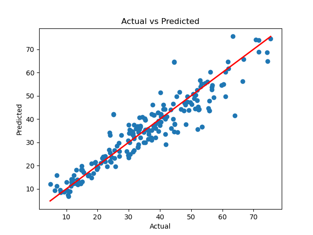
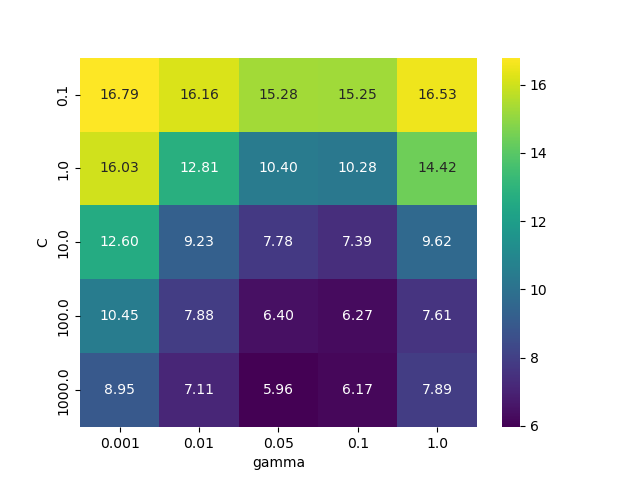

Concrete strength: support vector regression
Rendered notebook · Download .ipynb · Project README · All ML regression projects
Question
How well can a support vector regression model predict concrete compressive strength from the mix recipe and age, and how much do feature scaling and hyperparameter tuning matter compared with linear and polynomial baselines?
Data
Concrete Compressive Strength from the UCI Machine Learning Repository: 1,030 mixes with 8 inputs (cement, blast furnace slag, fly ash, water, superplasticizer, coarse aggregate, fine aggregate, age) and compressive strength in MPa. The notebook loads it into a local PostgreSQL table concrete, summarises it with SQL (strength by age bucket and by water/cement ratio) and adds an engineered wc_ratio = water / cement, for 9 features. The data file is not included in this repository.
Database: the published notebooks connect with postgresql+psycopg2://postgres@localhost:5432/postgres. The local login is read from ~/.pgpass and is not in this repository. The original connection string was edited for publishing; nothing else in the notebook was changed except local file paths in warning messages.
Methods and tools
Python, pandas, NumPy, scikit-learn, PostgreSQL, SQLAlchemy, matplotlib, seaborn
- 80/20 train/test split (
random_state=42): 824 training and 206 test rows, 9 features. - Baselines: linear regression and a scaled degree-2 polynomial pipeline.
- SVR: RBF kernel without scaling, then
StandardScaler+ SVR with RBF and linear kernels (default settings). - Tuning:
GridSearchCV(5-fold, RMSE scoring) over C ∈ {1000, 3000}, epsilon ∈ {2, 3}, gamma ∈ {0.02, 0.05}; then a 5 × 5 C × gamma grid at epsilon 3 for the heatmap.
Results (test set)
| Model | RMSE (MPa) | MAE | R² |
|---|---|---|---|
| Linear regression | 9.73 | 7.64 | 0.633 |
| Polynomial degree 2 (scaled) | 7.38 | 5.93 | 0.788 |
| SVR RBF, unscaled | 14.16 | – | – |
| SVR RBF, scaled (defaults) | 9.37 | – | – |
| SVR linear, scaled (defaults) | 10.88 | – | – |
| SVR RBF, tuned (C=1000, epsilon=3, gamma=0.05) | 5.84 | 4.19 | 0.868 |
The notebook prints only RMSE for the three untuned SVR models.
Key findings
- Scaling is essential for SVR: the unscaled RBF model (RMSE 14.16) is worse than plain linear regression (9.73); scaling alone brings it to 9.37.
- Tuning does the rest: the best grid setting (C=1000, epsilon=3, gamma=0.05, 5-fold CV RMSE 5.96) reaches test RMSE 5.84, MAE 4.19 and R² 0.868, ahead of the degree-2 polynomial (7.38).
- In the C × gamma heatmap, CV RMSE ranges from 16.79 (C=0.1, gamma=0.001) to 5.96 (C=1000, gamma=0.05); large C with moderate gamma works best.
- SQL summaries: average strength rises with age (22.3 MPa at ≤7 days to 49.6 MPa beyond 90 days) and falls as water/cement rises (56.3 MPa for low, 29.1 MPa for high).
Charts


Notebook
concrete_svr (rendered) · concrete_svr.ipynb. 30 code cells (24 with outputs, 2 charts), 11 markdown cells.
Run top to bottom (execution counts 1–31; count 4 belongs to a duplicate cell removed after the run). Lines that write to model_results are commented out. The baseline cells show harmless NumPy RuntimeWarning messages from scikit-learn’s matrix multiply.